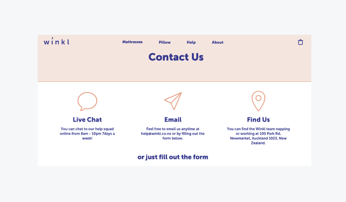
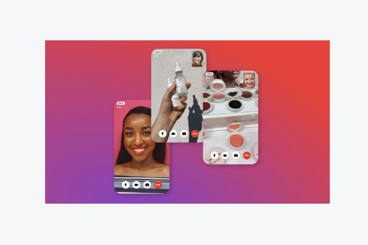
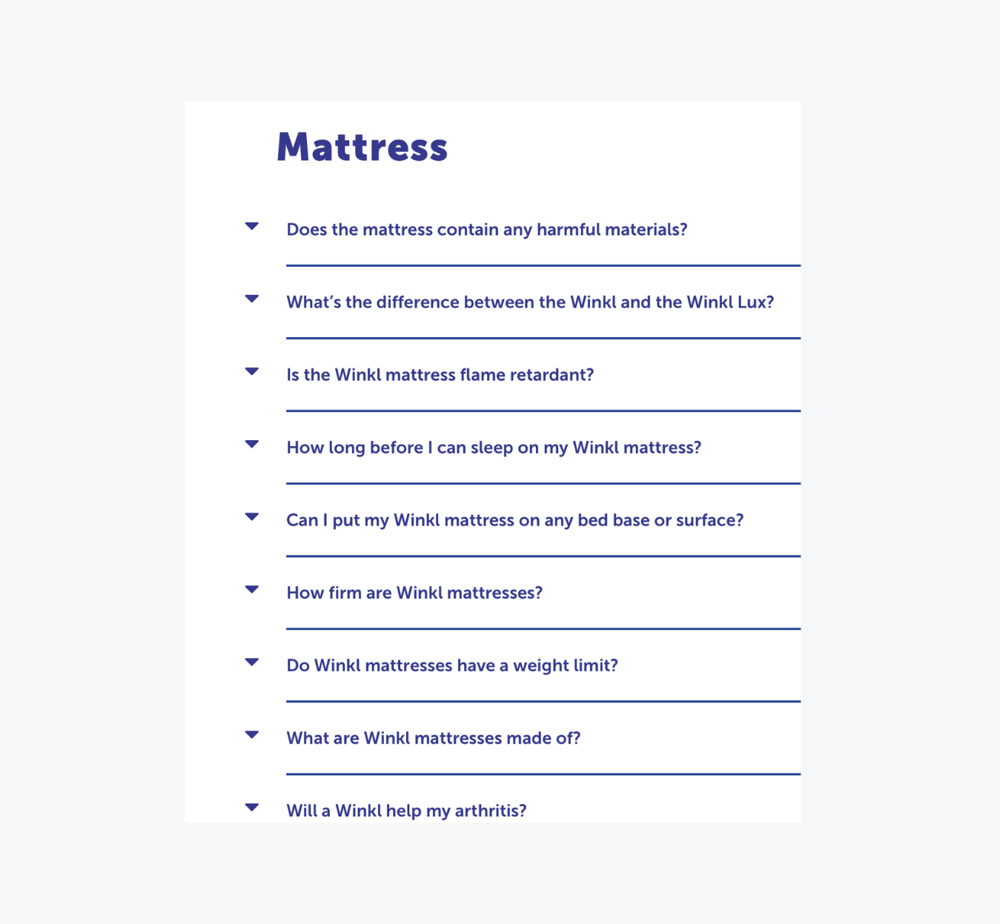
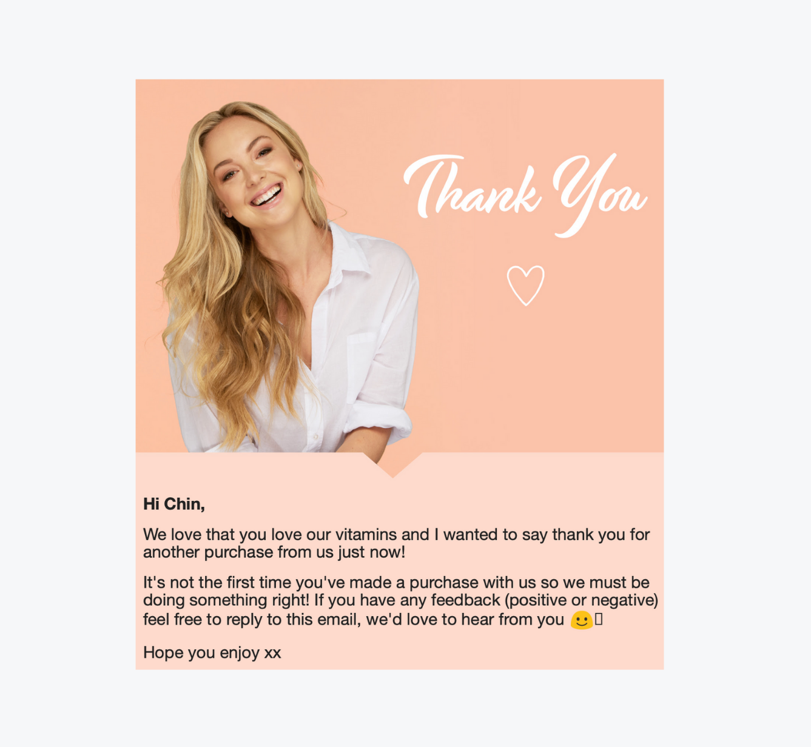
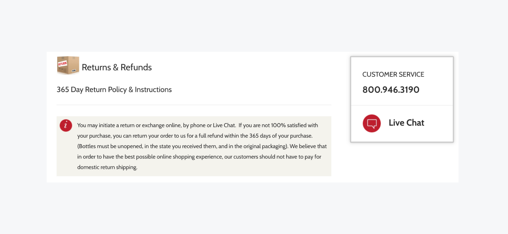
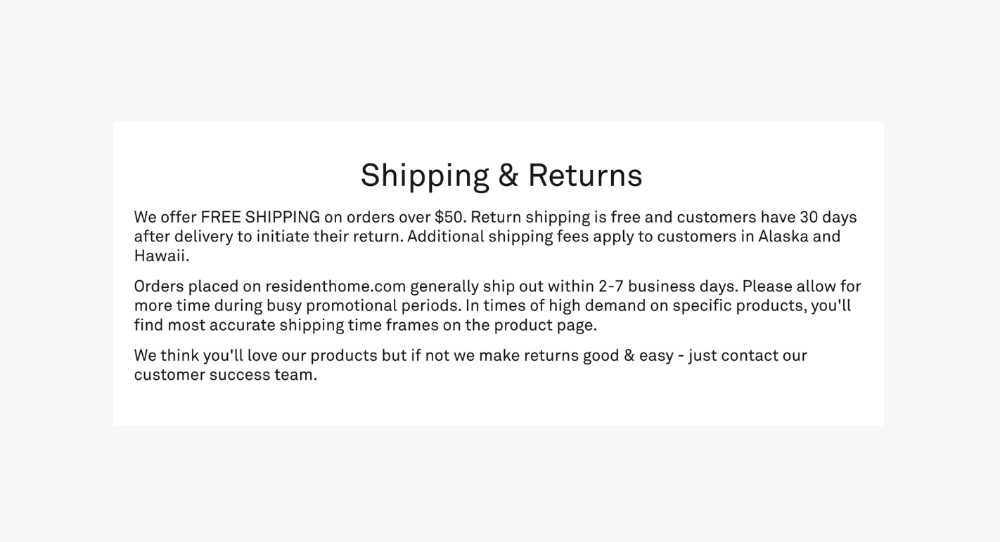
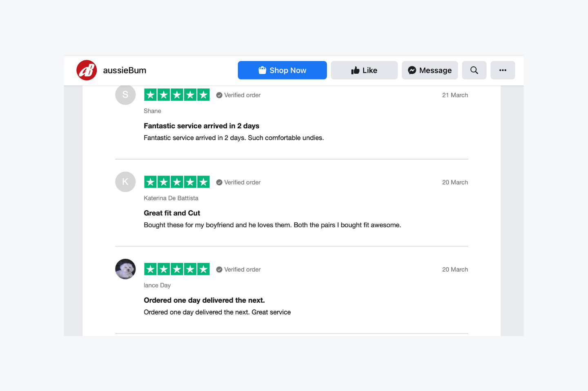

A generation ago, when you wanted to sell something, you open a store and advertise to attract customers. You train your team to provide excellent customer service. And then you follow up with offers in hopes of drawing customers back to you.
Today, millions of consumers buy online instead of walking into a store, where numerous digital platforms create a complete ecosystem.
What worked as effective customer service for a physical store can be replicated as eCommerce customer service. In a digital age, customer service remains a prime differentiator in gaining customer trust and loyalty and building relationships with them.
What is eCommerce customer service and why is it important?
eCommerce customer service provides support, guidance, and solutions throughout the customer experience. The best eCommerce customer support impacts how people experience, perceive and feel about your business.
Customers will ask questions and expect speed and convenience.
The way to compete is through effective eCommerce customer service that exceeds expectations. Let’s take a look at what works in building effective eCommerce customer service for your business.
How to improve customer service in eCommerce: 7 pillars
1. Meet customers’ needs where they are
Some 58% of consumers surveyed stated that shopping 24/7 is a key factor for buying online. A global eCommerce business would need 24/7 customer service even on weekends, to meet customer needs.
Australia’s highest-rated mattress retailer Koala is renowned for its stellar eCommerce customer service. The brand offers customer support till 10 pm, as products are delivered to doorsteps in the evenings when customers are home. Little wonder that Koala has achieved 14,000 five-star customer reviews!
Customers need to find support easily on websites, exemplified by Kiwi retailer Winkl’s website:

Winkl’s contact details are highly visible.
How do customers connect with you? Do they reach out via live chat with real-time support, email, or phone? Perhaps they enjoy community support and sharing over social media channels. The important thing is to meet your eCommerce customes where they need support most.
Kirsty Traill, VP of customer at Hootsuite, a social media management SaaS company with 16 million subscribers, explains that the value of social customer support lies in its reach: “In the case of a support post on a Facebook page, other users can see what the original issue was, and they may end up not having to contact you, as the response answers their question.”
Newer channels such as Hero’s live video shopping creates further opportunities for customers to chat with your in-store experts or customer service team.
Live-stream shopping events in the U.S. are expected to generate US$25 million by 2023 as Amazon and Facebook are testing live sales platforms. Levi’s and Tommy Hilfiger’s are live-streaming shopping events similar to QVC, where viewers can chat with hosts and stylists and then click on items for purchase.

Virtual shopping platforms such as one-to-many video shopping fromHero.
2. Delight your customers
Research shows 68% of online shoppers abandon their carts, and 24% is due to customers having to register an account. A way to counter that is by offering loyalty programs for customers to sign up and then make them happy with discounts, gifts, surprises, and exclusive sales.
Customers feel valued when their favorite stores and brands recognize their loyalty. Reward programs provide essential information on customers’ buying behavior and key dates like birthdays.
Rewards are positive reinforcements for customers. And delighting your customer helps with retention.
Small and thoughtful touches show care for customers.
“Customer service is a core team at Koala. Our experience - both presale and post-sale - is a unique selling point for Koala. We offer chat support until 10 pm. Email support goes even later. Customers don’t expect us to reply in the evening, so when we do, the impact is amazing!” says Koala customer service manager Ben Cadenel.
“We spend a lot of time with customers and improving the overall experience. We focus a lot on Surprise and Delight here. As an example, we send lots of surprise gifts to our customers.”
Do take a look at our 25+ email examples of how businesses have delighted eCommerce customers with personalized birthday gifts and in other ways.
3. Integrate all customer touchpoints with a single platform and use automation
Nothing irks customers more than when they reach out to you with a problem, only to be redirected, requiring them to repeat themselves. Integrating customer data under an organized process and tools such as a shared platform that collects and displays previous messages submitted by a customer helps.
The right support tools keep your eCommerce customer service standards high and response times low. Using automation tools helps with efficiency, especially during holiday sales, as your support agents would be inundated with an influx of support tickets.
Customer service is the backbone of your eCommerce business. It is crucial to have skilled managers and a sound organization especially if you have engaged outsourced eCommerce customer service agents as an extension of your customer service team.
4. Give your customers the gift of self-service
Given a choice, customers prefer self-service, which also empowers customers with the knowledge that they are anticipated to need. So having a solid Knowledge Base or a set of FAQs provides immediate answers. It is also a form of customer education, especially for new users to familiarize themselves with your product and understand and enjoy what they purchase.
Take a look at New Zealand mattress retailer Winkl’s brilliantly detailed FAQs with nearly 60 questions answered:

*Winkl’s FAQs are easy for customers to find and read. *
Customers want answers so that their journey is uninterrupted and they won’t bounce off your site. Building detailed FAQs or a Knowledge Base also lightens the load from your customer support agents during peak seasons so that they could focus on more complex customer inquiries.
5. Personalize your communication with customers
Customers enjoy being greeted by name as they enter a store they frequently patronize. Addressing your eCommerce customers by name and making personalized offers based on previous purchases, inquiries, or searches is an excellent step towards making customers feel valued and differentiating your business online, especially for Millennials.
“To create loyalty with Millennials, brands need to first cover the basics—that means top notch customer service and quick, individualized responses, through the channels they use such as social media and messaging,” says Joel Benzimra, KPMG International Global Advisory Lead for Consumer Markets.
Investing in personalized experiences for your customers adds a human touch to a crowded eCommerce space. As an example, Manly Bands sends out its customized rings with handmade ring boxes and personalized thank you cards, and it’s just one reason for the company’s fast growth and consistent 4.9 customer satisfaction score.

Positive encouragement for eCommerce customers.
6. Be fast, and free when possible
When customers reach out, they expect swift replies.
A case in point is Manly Bands, where the founders understood that wedding planning needed fast response times. They engaged Influx to provide customer support, resulting in 4000+ responses per month with 5-minute response times. The focus on customer service with thoughtful responses has generated positive business growth largely from customer referrals and disrupted a traditional retail segment of the wedding industry.
Visible and clearly defined store policies such as a Returns and Refund policy also significantly affect sales.
As online customers cannot touch or test a product, they rely on product information, customer reviews, and flexible returns policies to feel confident buying. Our high-growth eCommerce clients share a common trait of focusing on customer satisfaction with flexible Returns and Refund policies.
As customers are highly concerned about a site’s shipping costs and return policies before buying online, there should be direct links or footpaths to your Returns and Refunds policy.

Wine Chateau has an outstanding, hassle-free Returns and Refunds policy of 365 days and a visible customer service link.
Where possible, free delivery is a powerful incentive for consumers - 58% of US online shoppers have abandoned a cart. While reasons include window shopping, price comparison, saving items for later, exploring gift options, 49% is due to extra costs including shipping and taxes.

Resident Home’s Shipping and Return policy is a draw for customers.
Customer-centric policies are a gold standard of eCommerce customer service. And when mistakes happen, the way you handle the case makes the difference between retaining or losing a customer. This requires empathy delivered with swift resolutions for customers such as writing an effective email to resolve issues step by step.
7. Use customer service reviews and data to track and troubleshoot for future growth
Customer reviews are a priceless part of eCommerce. They are free testimonials on why customers love your brand, product, or service. It is also a form of social validation from peers and helps drive sales by boosting customer confidence when they are considering a purchase or sign-up.
Reviews are also helpful tools to troubleshoot the customer experience for future growth including bottlenecks and repeated issues. Your eCommerce customer service team communicates directly with customers on exactly what they like or don’t like and would have invaluable feedback and suggestions.
“Working with Influx has been a growing process. New questions come up, and we define answers together to find the best solutions,” says Michelle Luchese of Manly Bands.
And as Bill Gates once put it, “Your most unhappy customers are your greatest source of learning.”

Aussie Bum thrives on customer reviews, even on external sites like Trust Pilot, which create confidence for eCommerce customers.
Other data that helps you gauge your customer service level and trust are tools like NPS or CSAT and response times and resolution speeds from your eCommerce customer service team.
Streamline excellent customer support with Influx
eCommerce customer service is an essential part of the customer experience. Addressing your eCommerce customer needs, expectations, and grievances, if any, go a long way towards your business success. In all, customer service is a long-term investment into customer satisfaction and brand loyalty.
Your eCommerce customer conversation matters. Grow your business with experienced eCommerce teams working on demand. We match your brand voice for 24/7 support that improves your retention and scales your operation. Contact Influx today!